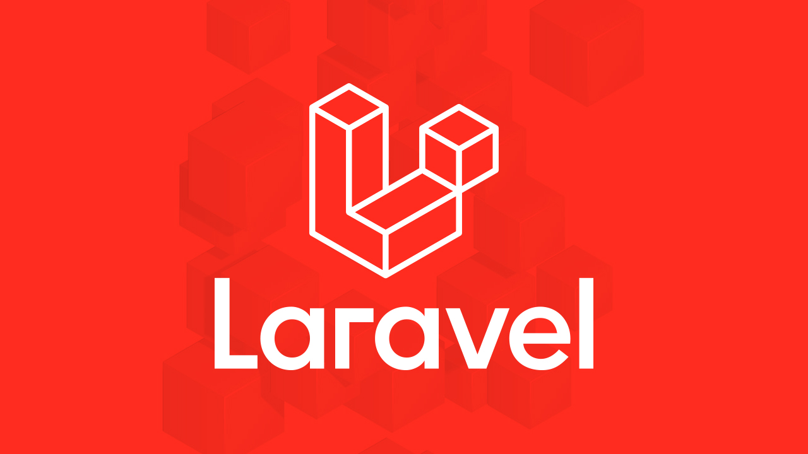
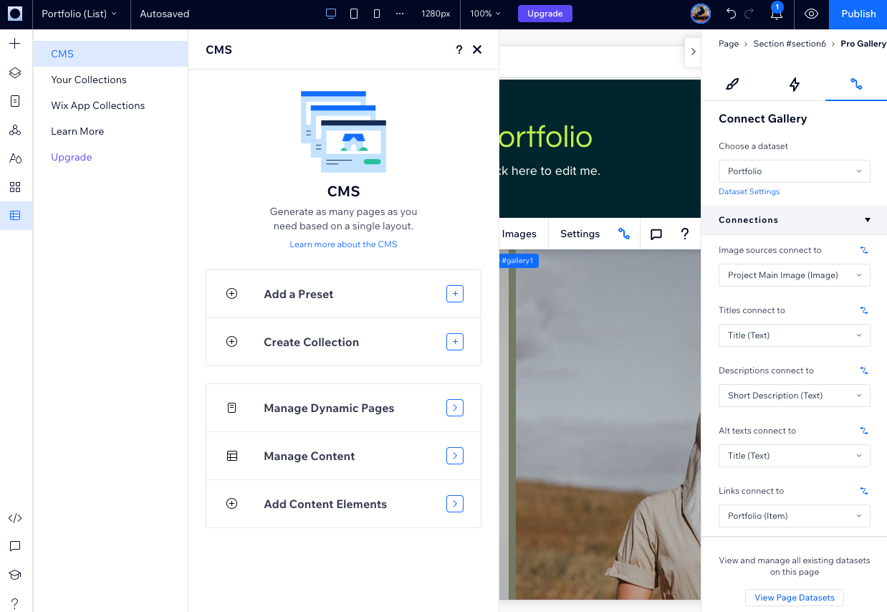

ecommerce-apriori-analysis
A data mining project using the Apriori algorithm to analyze customer purchasing behavior, discover association rules, and generate insights from an e-commerce dataset.
View Project
"Completed an internship in the Operations department, assisting with project management, mobile app and system testing, and technical support. Gained hands-on experience in PHP development using the Laravel framework and Filament for backend management."
View LinkedIn Profile
"Worked as a freelance content population and development specialist, managing website content through CMS platforms. Responsibilities included uploading and arranging text, images, and media, testing pages for functionality and formatting, publishing approved content, and ensuring adherence to content guidelines."
View LinkedIn ProfileProjects I have developed throughout my academic journey include web development, data analysis, and machine learning applications, all aimed at building a strong technical foundation and enhancing my practical skills.
A data mining project using the Apriori algorithm to analyze customer purchasing behavior, discover association rules, and generate insights from an e-commerce dataset.
View ProjectSmartX Predictive Maintenance System leverages Cognitive Computing Applications (CCA) and IIoT sensor data to predict machine failures, optimize maintenance schedules, reduce downtime, and provide actionable insights through AI-driven analytics, enabling efficient, data-driven, and sustainable industrial operations.
View ProjectA machine learning project that predicts stroke risk using patient health data, applying classification models to support early detection and preventive healthcare.
View ProjectA JavaFX desktop application that implements a Retrieval Augmented Generation (RAG) chatbot powered by OpenAI.
View Project